Префектура Тояма · Такаока · ремесло
Shimatani Syouryu в Такаоке: мастер, который настраивает храмовые колокольчики на рассвете
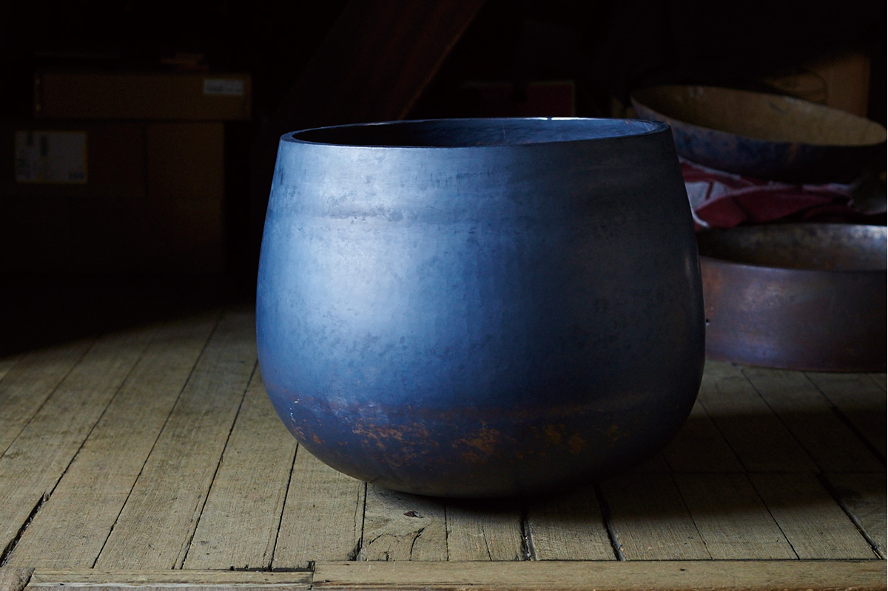
В Такаоке, городе литья и бронзы, с 1909 года работает семейная мастерская, где вручную куют орин, буддийские колокольчики для храмов. Её мастер четвёртого поколения научился слышать в металле «волну» звука и придумал из того же ремесла посуду, которую можно согнуть руками.
Мастерская
Колокольчики для храмов
Такаока на западе префектуры Тояма давно живёт литьём и обработкой металла, и мастерская Shimatani Syouryu вписана в эту историю с 1909 года. Её основал прадед нынешнего мастера, и с тех пор здесь делали только орин: металлические чаши, в которые ударяют, чтобы они зазвучали. В храме монах бьёт в орин, отмечая начало и конец чтения сутр или поклонов. Технику, пришедшую в Японию вместе с буддизмом, в семье передавали от отца к одному сыну.
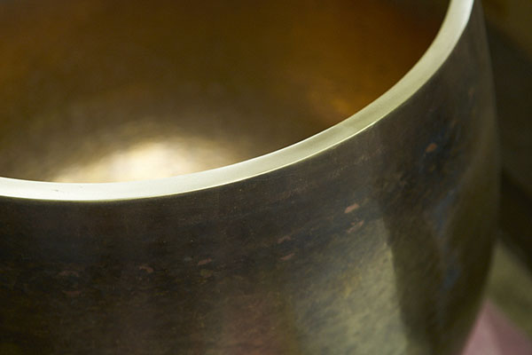
Почти все заказы приходят от храмов. Раз в 50 или 100 лет храмы затевают большой ремонт, и тогда в мастерскую привозят орин, сделанные предыдущими поколениями.
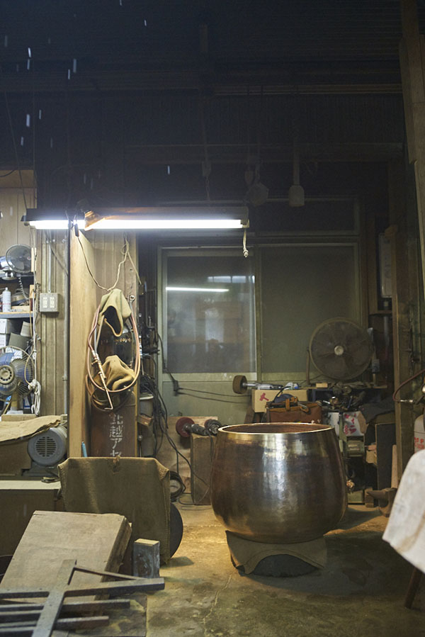
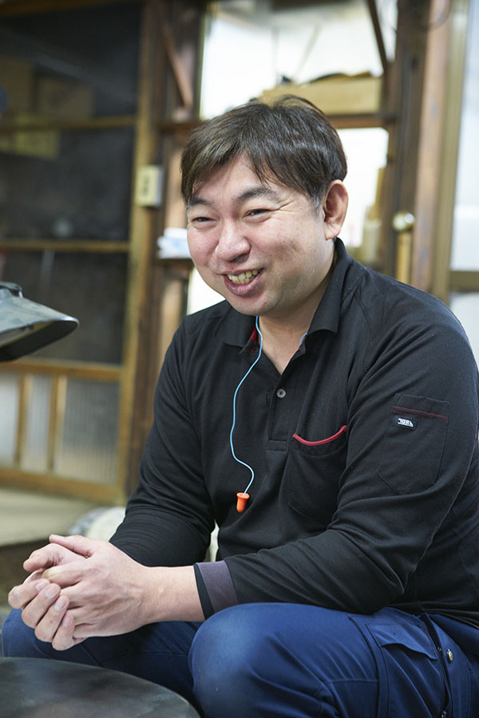
«Когда чинишь старый орин, видишь, как работал тот, кто его сделал. Это очень интересно и многому учит. А когда думаешь, сколько лет такая вещь проживёт, понимаешь, что уступать нельзя. Это соревнование с мастерами прошлого и мастерами будущего»
Ёсинори Симатани
Мастер
Путь домой
Ёсинори Симатани родился в Такаоке в 1973 году. В юности он не хотел жить по заранее расписанному сценарию, уехал в Токио и одно время мечтал стать поваром. Всё изменил разговор с женщиной, которая занималась уборкой как волонтёр. Она сказала, что родиться в семье, которая делает утварь для Будды, большая редкость и большая удача.
То, что ему казалось скучным и само собой разумеющимся, вдруг предстало чем-то незаменимым. Симатани решил всерьёз встретиться со своей судьбой: в 23 года он вернулся домой и пошёл в ученики к деду. Его учителями стали дед и отец, и с тех пор он делает орин каждый день.
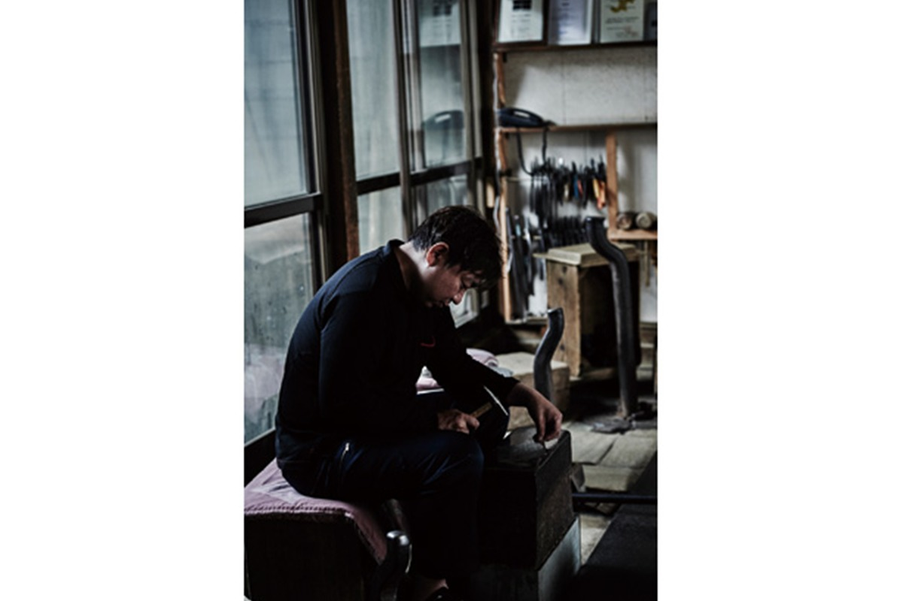
«Металл живой, и добиться, чтобы он раз за разом получался одинаковым, почти невозможно. Это как растить ребёнка с характером, пока он не станет взрослым. Сколько бы лет ни прошло, всё время пробуешь и ошибаешься. Я мастер и уверен, что делаю вещи не ниже определённого уровня, но, когда отдаю заказ, сердце до сих пор колотится»
Ёсинори Симатани
Девиз мастера звучит так: «Сделать интересным мир, в котором нет ничего интересного». В 2020 году он поднёс большой орин храму Эйхэй-дзи, одному из двух главных храмов школы дзэн Сото.
Звук
Настройка на рассвете
У орин есть особая «волна», колебание звука, которое мастера называют унэри. Оно складывается из трёх тонов: кан, оцу и мон. Придать чаше форму мало: мастерство орин в том, насколько точно удаётся настроить эту волну.
«Мы куём металл, растягиваем его и по ходу выравниваем волну. Настройка очень тонкая работа: если на душе неспокойно, по-настоящему приятный звук не поймаешь. Поэтому окончательную настройку я делаю рано утром, когда голова ясная. Но важнее всего держать себя в равновесии и в обычной жизни, работать и над характером тоже»
Ёсинори Симатани
Основа ремесла в том, чтобы бить молотком по металлу и равномерно его растягивать, с одной и той же силой и в одном ритме. Поначалу, вспоминает мастер, утром он бил бодро, а к обеду силы уходили. На один орин уходит около трёх месяцев, и за годы ударов рука запомнила, каким должно быть касание молотка. Даже после двадцати с лишним лет работы Симатани каждое утро садится настраивать орин, чтобы не потерять слух.
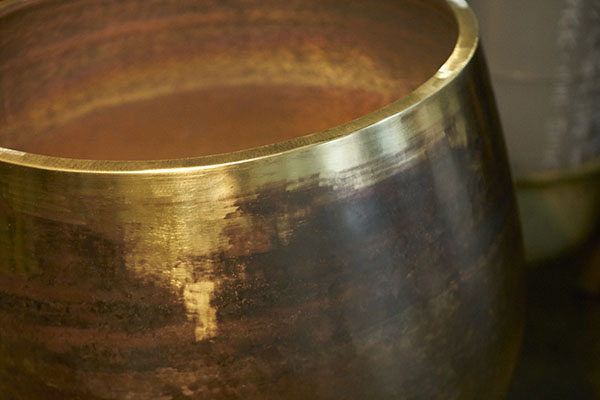
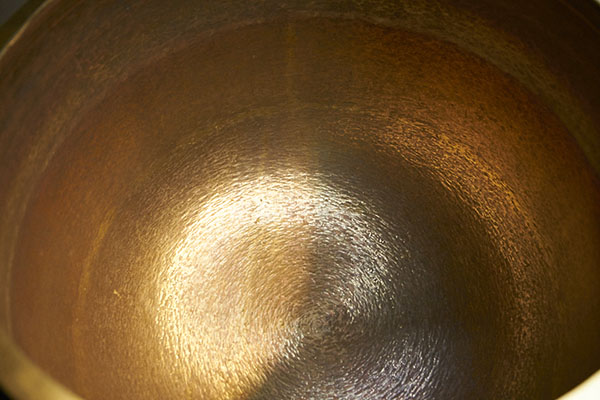
Судзугами
Олово, похожее на бумагу
Буддийские обряды уходят из повседневной жизни, и заказов на орин становилось меньше. Симатани рассудил так: если делать одно и то же, ремесло угаснет. Вместе с мастерами своего поколения он договорился каждый год придумывать по одной новой вещи, такой, какую хотелось бы иметь самим. Он основал бренд syouryu, и техника орин перешла на другой металл.
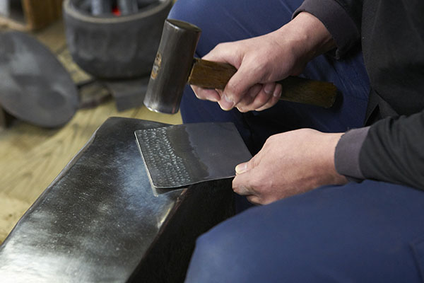
Так появились судзугами, «оловянная бумага»: тарелки из чистого олова толщиной 0,75 мм. Олово очень мягкое, и при обычном сгибании лист быстро рвётся. Ковка в технике орин укрепляет металл, и тарелку можно сгибать и выпрямлять сколько угодно раз, придавая ей нужную форму. Посуда тонкая, как бумага, при этом прочная и подходит для стола.
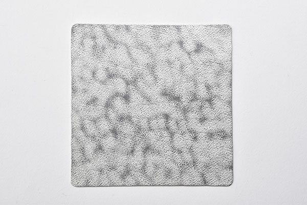
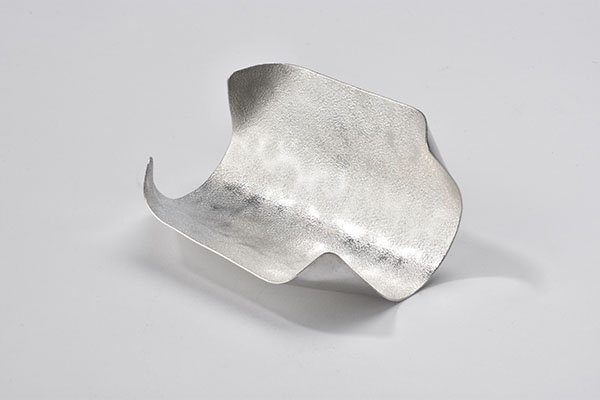
Судзугами стали визитной карточкой мастерской и полюбились не только в Японии, но и в Париже. В 2020 году они приносили столько же, сколько сами орин, а в ученики к Симатани стали проситься молодые мастера.
Как делают судзугами
Олово плавится при низкой температуре, и для этого мастерская обходится обычной газовой плиткой и кастрюлей. Жидкий металл разливают в формы размером с книгу в мягкой обложке, дают остыть и на специальном станке раскатывают в тонкий лист. Затем мастер в ровном ритме бьёт по листу молотком, на бойке которого вырезан узор. Красивый рисунок на поверхности и есть след опытной руки.
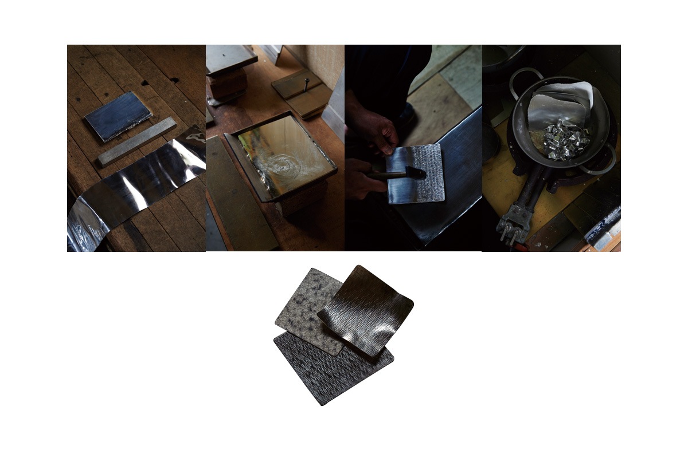
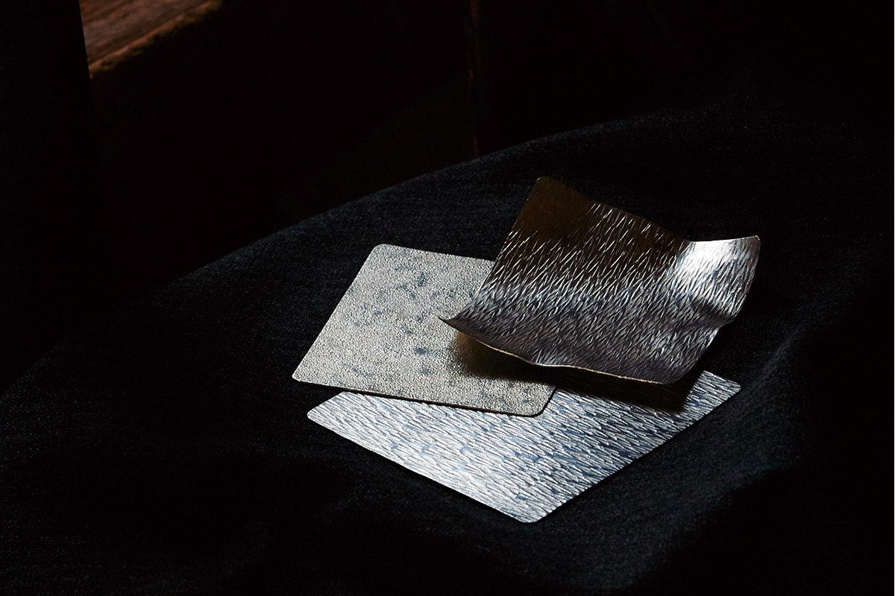
За границей
Звук, который понимают без слов
Симатани много выставляется за рубежом. Там орин не знают как буддийскую утварь, и покупают его люди, далёкие от буддизма.
«За границей орин тронул людей даже сильнее, чем японцев. Хочется, чтобы его мягкий, тёплый звук воспринимали как инструмент, который успокаивает душу»
Ёсинори Симатани
«В Париже одна француженка, услышав орин, заплакала. Что я тогда почувствовал, словами не передать»
Ёсинори Симатани
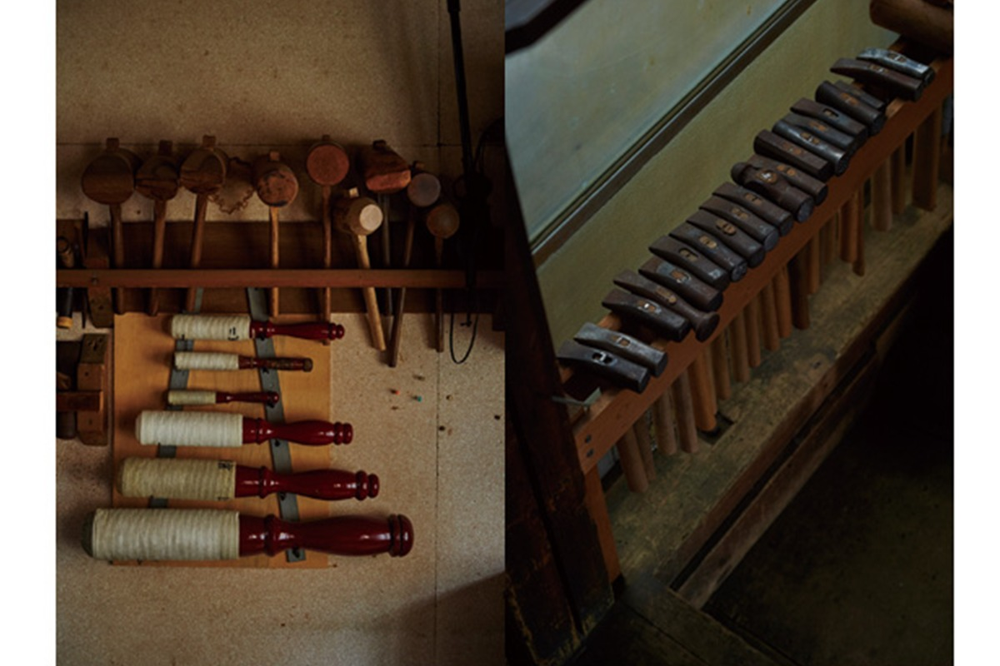
Одних орин ремеслу было бы уже мало, поэтому появились судзугами, и они помогают сохранить технику орин. Мастер оттачивает обе вещи ударами молота, и каждая делает другую лучше. Беречь традицию, похоже, значит просто не сдаваться.
Shimatani Syouryu
- Адрес
- префектура Тояма, Такаока, Сэнгоку-мати, 4-2
- Телефон
- +81 766-22-4727
- Сайт
- syouryu.co.jp
Фото: Синсукэ Сугино, Кадзума Такигава, Коити Масукава.